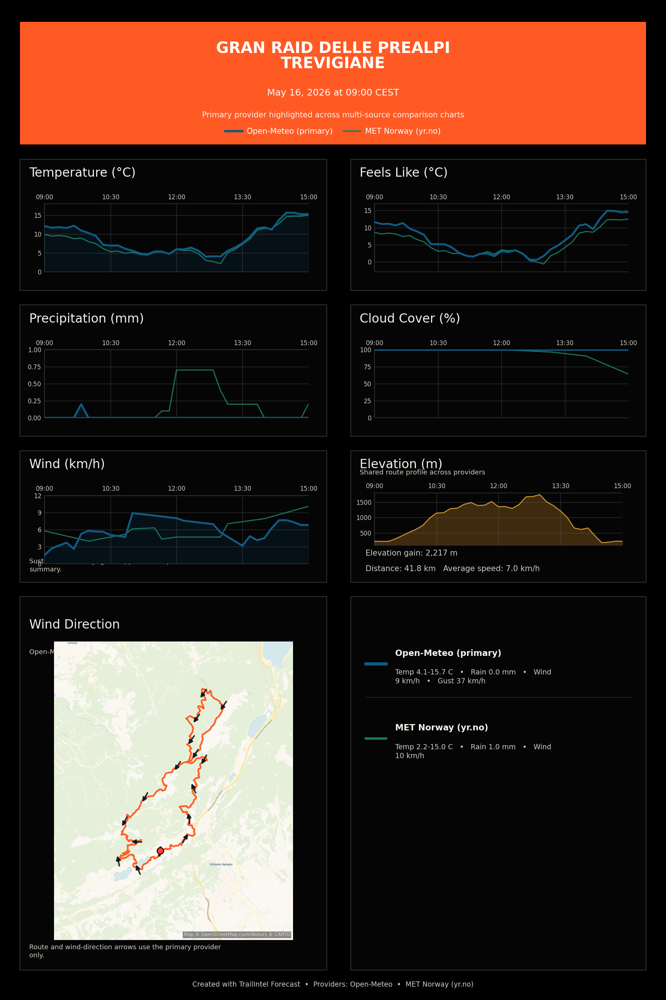

{kind=link}
Temperature
Ambient temperature across the sampled route, with all available providers overlaid.
Preparing interactive comparison...
Route Forecast
Weather outlook for a 41.80 km route starting May 16, 2026 at 09:00 UTC+02:00.
Side-by-side forecast summaries across the selected providers for the same sampled route timeline.
| Provider | Temp Range | Max Wind | Estimated Rain | Wettest Segment | Coverage | Notes |
|---|---|---|---|---|---|---|
| Open-Meteo | 4.1C to 15.7C | 8.9 km/h | 0.0 mm | May 16, 09:50 | Feels-like: yes | Gust: yes | Rain chance: yes | n/a |
| MET Norway (yr.no) | 2.2C to 15.0C | 10.1 km/h | 1.0 mm | May 16, 12:00 | Feels-like: yes | Gust: no | Rain chance: no | Wind gusts unavailable for some MET Norway timestamps. | Precipitation probability unavailable for some MET Norway timestamps. | Precipitation values are hourly averages derived from MET Norway next_6_hours periods. |
Pan and zoom the route over a live OpenStreetMap-style basemap. The fallback route overview stays available when tiles cannot load.
Loading live basemap tiles and route overlays…
Interactive provider overlays across the sampled route. Hover any chart to compare the same moment in time.
Ambient temperature across the sampled route, with all available providers overlaid.
Preparing interactive comparison...
Apparent temperature comparison across providers when the metric is available.
Preparing interactive comparison...
Estimated precipitation intensity along the route for every available provider.
Preparing interactive comparison...
Cloud cover percentage along the same sampled route for each provider.
Preparing interactive comparison...
Sustained wind comparison across providers, aligned to the sampled route.
Preparing interactive comparison...
Route profile aligned to the forecast timeline so hover details can tie weather back to terrain.
Preparing interactive comparison...
The full rendered route forecast chart preserved as a static image for quick sharing.
